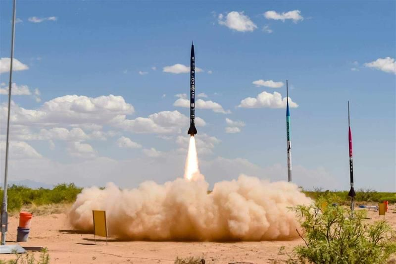
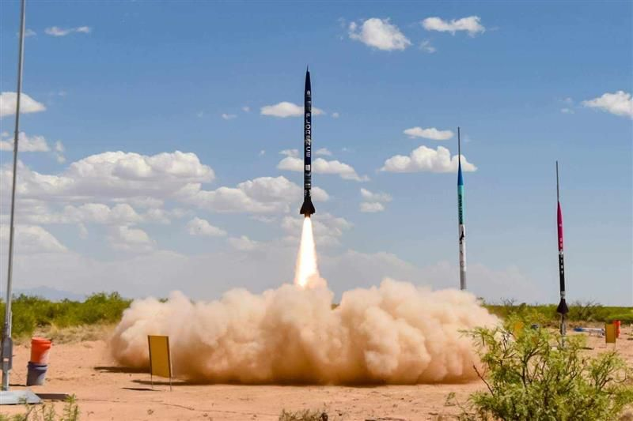

Jupyter Notebooks, Statistical Analysis, Teamwork, Collaboration, Kinematics, Project Management, Embedded Programming, Simulation, Modelling, Optimisation, Python, C++, Rust, Rocketry

IMC Prosperity
I recently participated in the IMC Prosperity program, a 15-day simulated trading experience that tested our Python skills, data science expertise, and financial knowledge. Working in a three-person team, we tackled algorithmic and mathematical challenges while trading in various markets, including ETF arbitrage, commodities, and foreign exchange (FX). This immersive experience provided invaluable insights into trading strategies, market dynamics, and the importance of teamwork. We not only sharpened our technical skills but also built strong friendships and learned a great deal from one another.


 

The program's structure was meticulously planned, with each day presenting new challenges that built upon our existing knowledge while pushing us to learn more. We tackled algorithmic and mathematical training challenges that required us to apply our technical skills in real-world contexts. These challenges were both stimulating and demanding, as they required a solid understanding of algorithms, mathematical concepts, and their applications in finance.
One of the most exciting aspects of the IMC Prosperity program was the opportunity to trade in various financial instruments, including ETF arbitrage, commodities, and foreign exchange (FX). ETF arbitrage involves exploiting price discrepancies between exchange-traded funds (ETFs) and their underlying assets to make a profit. This type of trading requires quick decision-making and a keen eye for detail, as the opportunities can be fleeting. The experience was invaluable in teaching us how to identify these discrepancies and execute trades efficiently.
Trading in commodities and FX added another layer of complexity to the program. Commodities trading involves buying and selling physical goods like gold, oil, or agricultural products, often through futures contracts. This market is influenced by a wide range of factors, including geopolitical events, weather conditions, and global supply and demand trends. Navigating this market required us to stay informed about global news and trends and to think strategically about how these factors could impact prices.
FX trading, or foreign exchange trading, involved buying and selling currencies. This market is the largest and most liquid in the world, with daily trading volumes exceeding $6 trillion. Trading currencies is influenced by various factors, including interest rates, economic data, and geopolitical events. The rapid pace and high volatility of the FX market made it a challenging but thrilling part of the program.
As a part of a three-man team, we collaborated closely to tackle these challenges. Each of us brought unique strengths to the table, and we learned a great deal from each other throughout the experience. Our teamwork was crucial, as effective communication and collaboration allowed us to share insights, brainstorm solutions, and make collective decisions under pressure. Over the 15 days, we not only honed our trading skills but also forged strong friendships. Working together under intense conditions created a bond that went beyond professional collaboration, and we became a cohesive unit, supporting each other both in and out of the trading simulations.
One of the key takeaways from the IMC Prosperity program was the importance of having a robust skill set that spans technical and financial domains. Our Python skills were put to the test, as we needed to automate trading strategies, analyze data, and implement algorithms efficiently. Python's versatility and power in handling large datasets and performing complex calculations were invaluable in this context. Additionally, our data science skills were crucial in analyzing market trends, backtesting trading strategies, and making data-driven decisions. The ability to interpret and leverage data effectively gave us a significant edge in identifying profitable trading opportunities.
Financial knowledge was equally important, as understanding market mechanisms, financial instruments, and economic indicators helped us navigate the complex landscape of trading. We learned how to apply theoretical knowledge in practical scenarios, gaining insights into risk management, portfolio diversification, and the psychological aspects of trading. The program emphasized the importance of staying informed and continuously learning, as the financial markets are constantly evolving and influenced by a multitude of factors.
In conclusion, the IMC Prosperity program was a transformative experience that provided us with a comprehensive understanding of trading and financial markets. The 15-day journey was both challenging and rewarding, pushing us to develop and refine our skills in Python, data science, and finance. Working closely with my teammates, I gained not only technical and financial knowledge but also valuable insights into teamwork, communication, and collaboration. This experience has deepened my passion for finance and technology and has motivated me to continue exploring the dynamic and ever-changing world of trading.